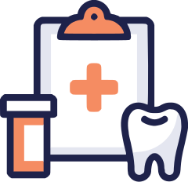

Challenge
Make a long list of benefits feel inviting on a careers page, instead of reading like the fine print in an offer letter.
Nine illustrations for a company careers page, one for each employee perk. A shared outline, a tight palette and the same soft shading make everything from a 401(k) to a dog-friendly office feel like one family.
Make a long list of benefits feel inviting on a careers page, instead of reading like the fine print in an offer letter.
A family of filled-line illustrations with one outline weight, a navy and orange palette, and the same soft shadow on every object.
Nine perk illustrations candidates can scan in seconds, from health coverage and a 401(k) to lunch, the gym and time off.
The Style
Perks cover everything from retirement savings to a free lunch. To keep them from feeling random, every illustration follows the same few rules for line, color and shading.
A single heavy navy outline wraps every shape, so a bus and a tooth still read as part of the same set.

Navy for structure, lavender for shade, and orange only where the eye should land: the coin, the cross, the sparkle.
One flat lavender curve on each object adds depth without gradients, so the art stays light at any size.
The Set
Each perk got one object that reads at a glance, even before you see the label: a piggy bank for retirement, a bus for the commute, a calendar that never runs out for time off.
In Context
On the page, each illustration leads a short perk card. The art does the first read, the headline confirms it, and one line of copy covers the details, so candidates can scan the whole list in seconds.
Takeaways
Benefits are abstract. Each one only clicked once it had a single everyday object people already connect to it.
Saving orange for one focal detail per illustration did more to unify the set than matching shapes ever could.
Candidates skim a perks page. Big, simple silhouettes with short labels let the whole list land in a few seconds.
Up Next